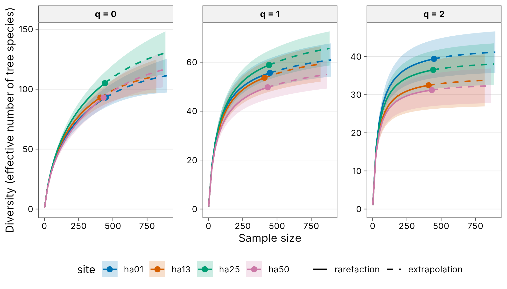
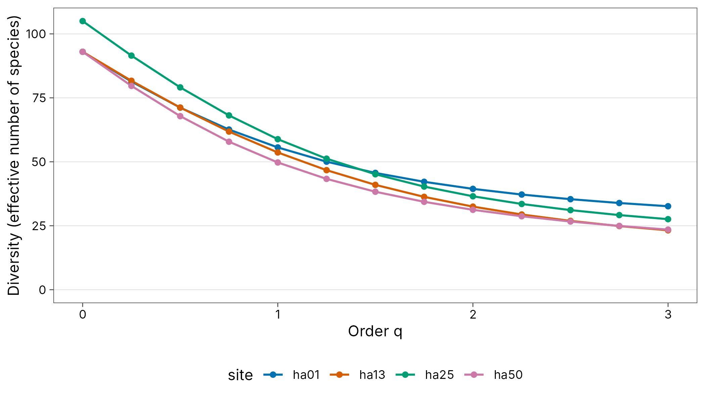
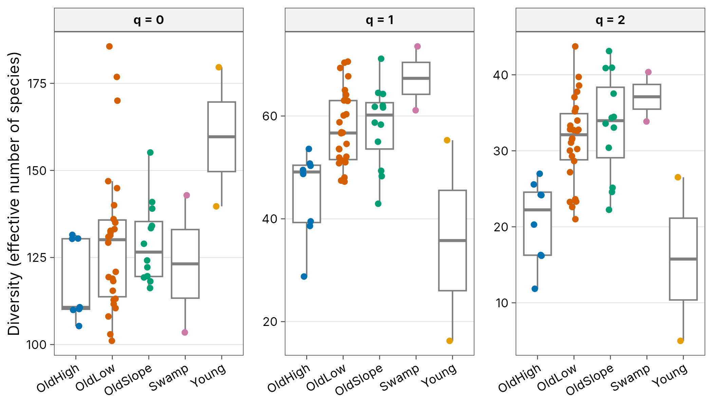
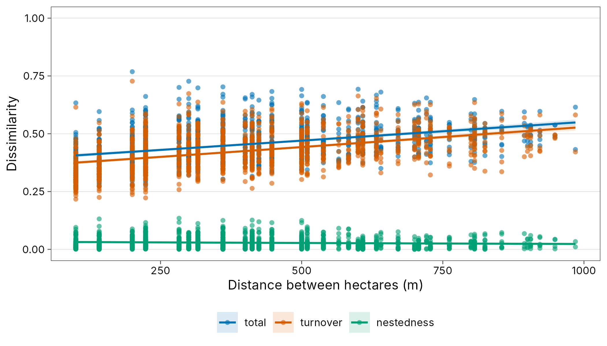
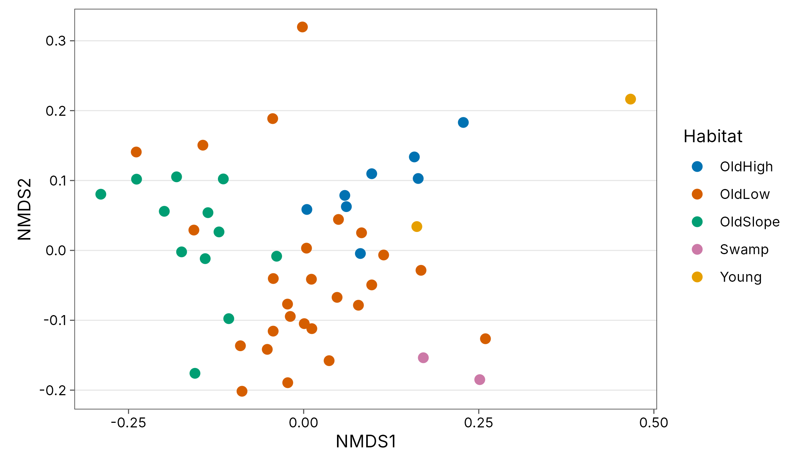

Case study: trees on Barro Colorado Island
Source:vignettes/articles/case-plants.Rmd
case-plants.RmdThe 50 ha forest dynamics plot on Barro Colorado Island, Panama, is
one of the best known tree censuses in the world. The BCI
dataset in vegan holds counts of 225 tree species with
a stem diameter of at least 10 cm in fifty 1 ha subplots, and
BCI.env holds habitat type, environmental heterogeneity and
coordinates for each subplot.
Source and licence. Condit et al. (2002), distributed with vegan (Oksanen et al.; licence GPL-2). The data are loaded from vegan at run time and are not redistributed with tidydiversity.
Tidy the data
data(BCI, BCI.env, package = "vegan")
env <- tibble::tibble(
site = sprintf("ha%02d", seq_len(nrow(BCI))),
habitat = BCI.env$Habitat,
env_het = BCI.env$EnvHet,
x = BCI.env$UTM.EW - min(BCI.env$UTM.EW),
y = BCI.env$UTM.NS - min(BCI.env$UTM.NS)
)
trees <- community_long(bind_cols(site = env$site, BCI), cols = -site)
trees
#> # A community: 50 sites, 225 species, 21,457 individuals
#> site species abundance
#> <chr> <chr> <int>
#> 1 ha01 Alchornea.costaricensis 2
#> 2 ha01 Alseis.blackiana 25
#> 3 ha01 Annona.spraguei 1
#> 4 ha01 Apeiba.glabra 13
#> 5 ha01 Apeiba.tibourbou 2
#> 6 ha01 Astronium.graveolens 6
#> 7 ha01 Beilschmiedia.pendula 4
#> 8 ha01 Brosimum.alicastrum 5
#> 9 ha01 Casearia.arborea 1
#> 10 ha01 Casearia.sylvestris 2
#> # i 4,529 more rowsCompleteness and curves
cov <- div_coverage(trees)
summary(cov$coverage)
#> Min. 1st Qu. Median Mean 3rd Qu. Max.
#> 0.8710 0.9097 0.9202 0.9184 0.9289 0.9470Each hectare has about 400 trees, and coverage is between about 87% and 95%: tropical forests have many rare species, so one in every ten or so further trees would still be a species not yet recorded in that hectare. The richness curves are far from flat, while Shannon and Simpson diversity are much closer to their asymptotes.
curves <- div_rarefy(filter(trees, site %in% c(
"ha01", "ha13", "ha25",
"ha50"
)), nboot = 100)
autoplot(curves, ylab = "Diversity (effective number of tree species)")
Diversity profiles
div_hill(filter(trees, site %in% c("ha01", "ha13", "ha25", "ha50")),
q = seq(0, 3, by = 0.25)
) |>
autoplot()
Diversity and habitat
est <- div_estimate(trees, q = c(0, 1, 2), nboot = 100) |>
tidy() |>
add_site_data(env)
fit <- lm(estimate ~ habitat + env_het,
data = filter(est, q == 1),
weights = weight
)
broom::tidy(fit, conf.int = TRUE)
#> # A tibble: 6 x 7
#> term estimate std.error statistic p.value conf.low conf.high
#> <chr> <dbl> <dbl> <dbl> <dbl> <dbl> <dbl>
#> 1 (Intercept) 41.2 3.37 12.2 9.72e-16 34.4 48.0
#> 2 habitatOldLow 14.0 3.39 4.14 1.57e- 4 7.20 20.9
#> 3 habitatOldSlope 13.8 3.95 3.48 1.13e- 3 5.81 21.7
#> 4 habitatSwamp 22.2 8.36 2.65 1.12e- 2 5.30 39.0
#> 5 habitatYoung -21.6 4.43 -4.88 1.42e- 5 -30.5 -12.7
#> 6 env_het 3.34 5.93 0.563 5.76e- 1 -8.61 15.3
ggplot(est, aes(habitat, estimate, colour = habitat)) +
geom_boxplot(outlier.shape = NA, colour = "grey50") +
geom_jitter(width = 0.15, height = 0) +
facet_wrap(~ paste("q =", q), scales = "free_y") +
scale_colour_tidydiversity() +
labs(x = NULL, y = "Diversity (effective number of species)") +
theme_tidydiversity() +
theme(
legend.position = "none",
axis.text.x = element_text(angle = 30, hjust = 1)
)
Distance decay
Bray-Curtis dissimilarity rises slowly with the distance between hectares, and almost all of it is balanced variation (turnover) rather than abundance gradients. Passing two coordinate columns gives Euclidean distance.
decay <- trees |>
left_join(env, by = "site") |>
beta_decay(gradient = c(x, y), index = "bray")
autoplot(decay, xlab = "Distance between hectares (m)")
Ordination and PERMANOVA
beta_dist() turns pairwise results into a
dist object for vegan.
bray <- beta_pair(trees, index = "bray")
d <- beta_dist(bray)
vegan::adonis2(d ~ habitat + env_het, data = env, permutations = 499)
#> Permutation test for adonis under reduced model
#> Permutation: free
#> Number of permutations: 499
#>
#> vegan::adonis2(formula = d ~ habitat + env_het, data = env, permutations = 499)
#> Df SumOfSqs R2 F Pr(>F)
#> Model 5 1.4830 0.2827 3.4683 0.002 **
#> Residual 44 3.7627 0.7173
#> Total 49 5.2457 1.0000
#> ---
#> Signif. codes: 0 '***' 0.001 '**' 0.01 '*' 0.05 '.' 0.1 ' ' 1
nmds <- vegan::metaMDS(d, trace = FALSE)
scores <- bind_cols(env, as.data.frame(vegan::scores(nmds)))
ggplot(scores, aes(NMDS1, NMDS2, colour = habitat)) +
geom_point(size = 2.5) +
coord_equal() +
scale_colour_tidydiversity() +
labs(colour = "Habitat") +
theme_tidydiversity(legend_position = "right")
References
Condit, R., Pitman, N., Leigh, E. G., et al. (2002). Beta-diversity in tropical forest trees. Science 295: 666-669.
Oksanen, J., Simpson, G. L., Blanchet, F. G., et al. vegan: Community Ecology Package. https://CRAN.R-project.org/package=vegan